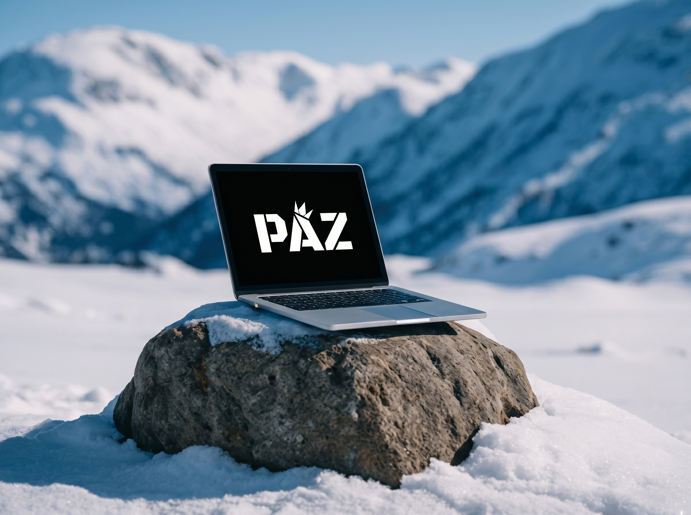
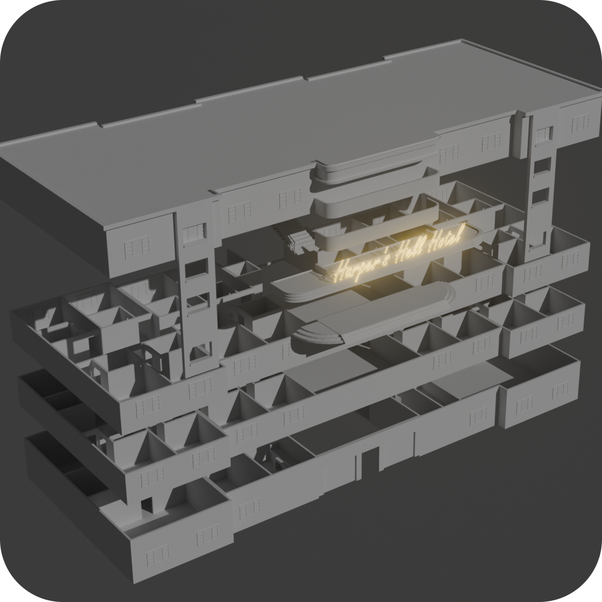
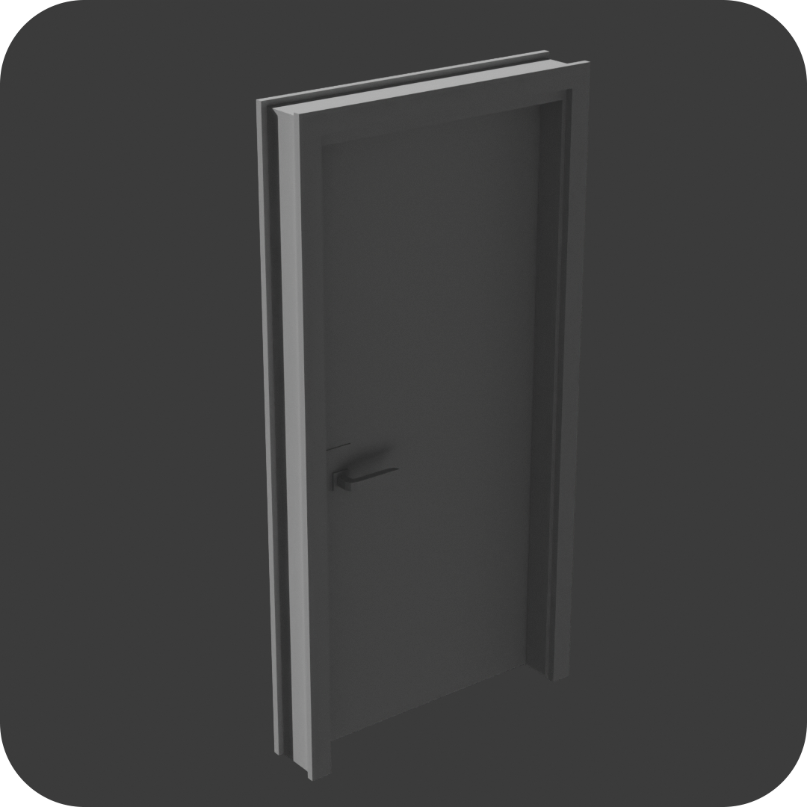
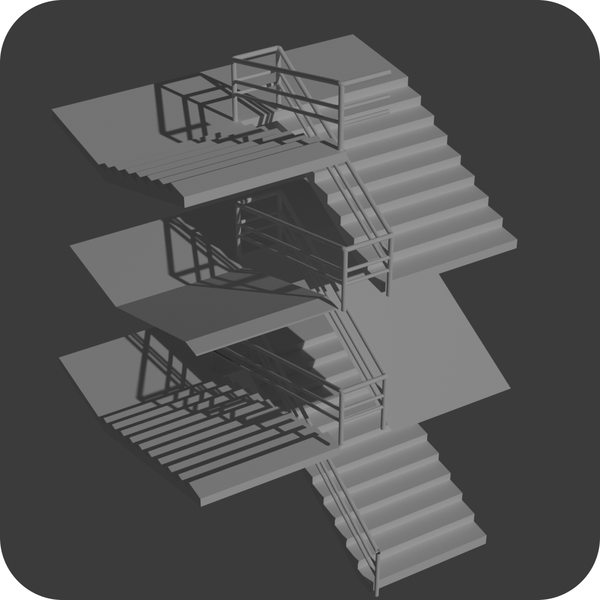

Biz Kimiz?
Zirve kadar keskin, atmosfer kadar derin projeler üreten bağımsız bir oyun stüdyosuyuz. PAZ Studio çatısı altında, oyuncuları benzersiz dünyaların ve gerilim dolu hikayelerin içine çekmeyi hedefliyoruz.

Geliştirme Aşamasından Kareler


